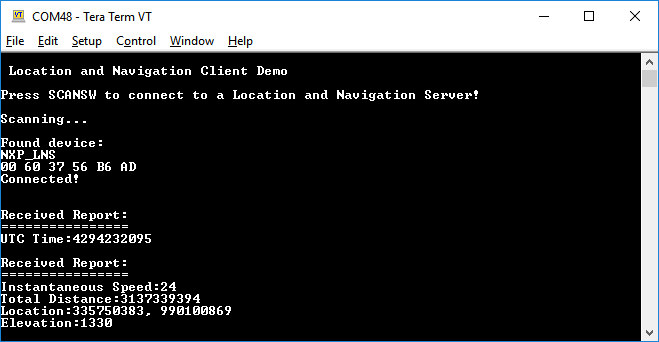

The setup requires two supported platforms, one for the location and
navigation server and other for the location and navigation client.
- Open a serial port terminal and connect it to the temperature collector board, in the
same manner as described in 5.1.3.
- To start scanning for a server, press the SCANSW button.
- Once connected to a server, the client will enable the location and speed
characteristic notifications.
- Monitor the received reports on the client’s console.
Figure 1. Location and Navigation Client Demo